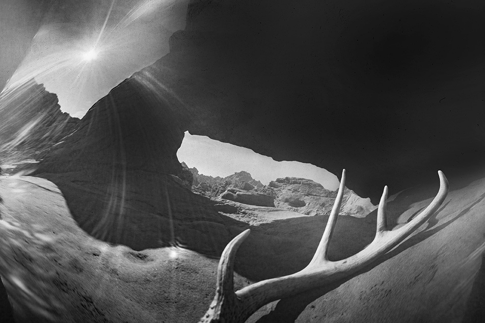
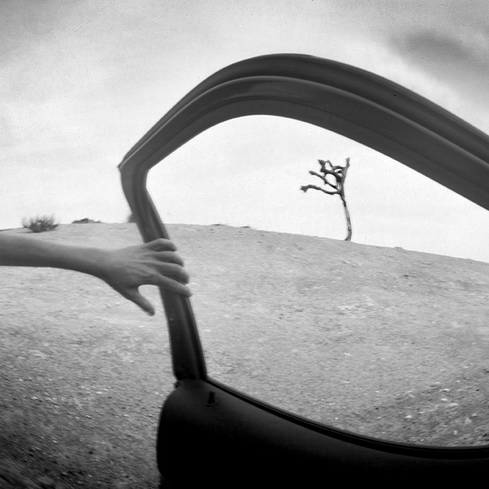
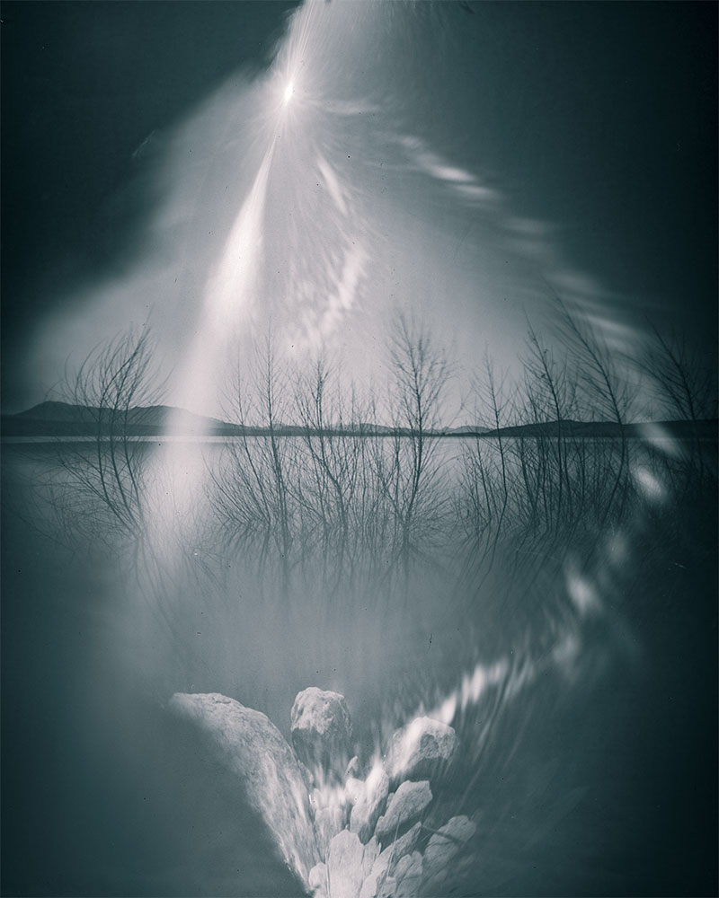
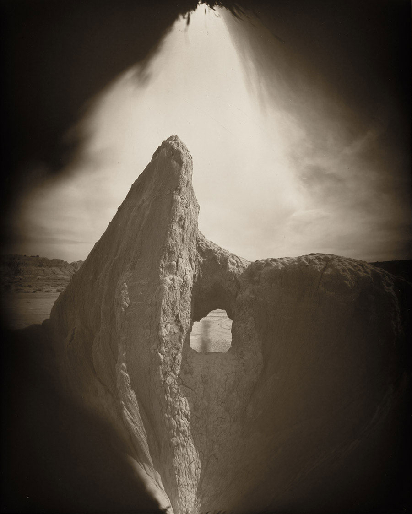
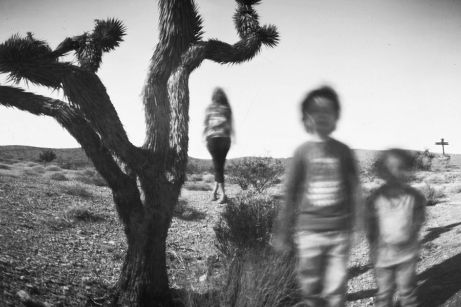
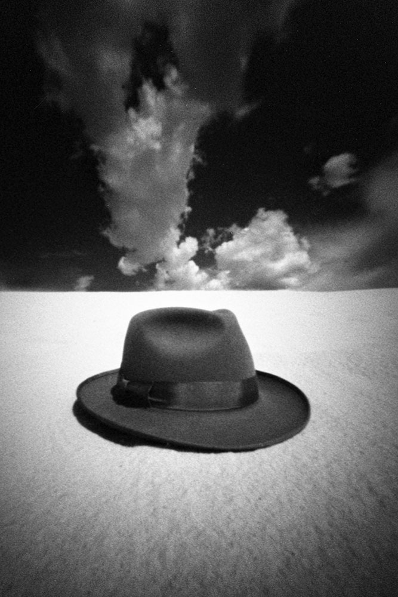

The following images are examples of pinhole images created with self made cameras. Each image has the imprints of a particlar camera.

Valley of Fire, Nevada. About an 8 second exposure in bright sunlight. The rock arch here was just a small opening about 3 feet wide
but the pinhole camera distorts scale and makes it appear gigantic.

Goldfield, Nevada. When driving into town, this lone tree caught my eye and I had to stop. Goldfield is a place
stuck in time, ideal for a pinhole image. Exposure was about 12 seconds in bright sunlight wtih a camera made from a wine bottle canister.

Pahranagat, Nevada. This magical place is an oasis for migratory birds in the harsh Mojave desert.
The rocks below are distorted so they appear as skeletal figures, heaven above and hell below.

Cathedral Gorge, Nevada. This place lays bare the passage of time and forming and erosion of the earth.
I captured the figure of my wife through the opening in the rock.

Goodsprings, Nevada. My family poses for a portrait in the desert. When I saw the bend in the branch
of that Joshua Tree, I knew I had to use it for a photograph.

Dunes, Utah. The harsh, blank space of the sand dunes needed a figure, so I used a hat. Perhaps a
tribute to Robert Oppenheimer.